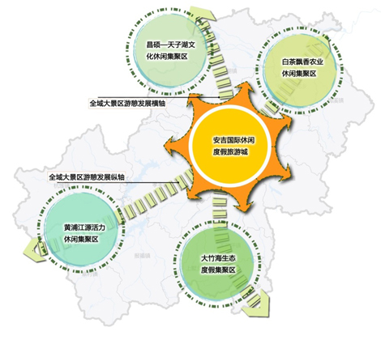
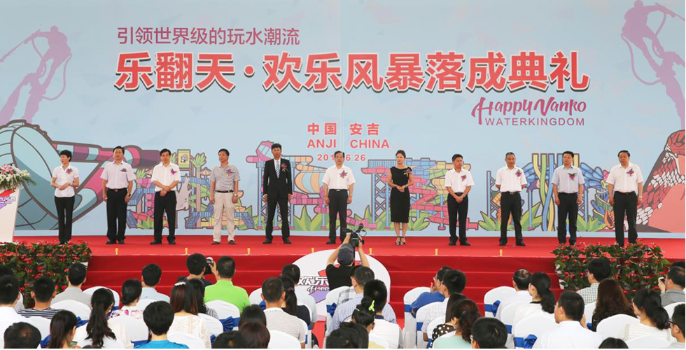

游器全域旅游的实践经验
游器2014-2015年区域规划项目
15个省份
55个地市
游器2014-2015年部分区域规划项目
| 浙江省舟山市普陀区旅游公共服务体系专项规划 | 浙江省丽水市云和县旅游产业战略策划及总体规划 |
| 浙江省衢州市旅游发展“十三五”规划项目顾问服务 | 浙江省淳安县千岛湖旅游公共服务体系规划 |
| 浙江省象山县大塘港农业区域旅游战略策划 | 浙江省半边山五彩渔镇旅游商业及业态策划 |
| 浙江省平湖市旅游发展规划（含近三年行动计划）（2015-2030） | 云南省马龙县旅游产业建设规划 |
| 浙江省丽水市云和县云和梯田旅游度假区战略规划 | 四川省成都市温江区“全域旅游”发展总体规划 |
| 浙江省丽水市云和县云和湖旅游度假区总体规划 | 上海市智慧旅游标准化体系课题研究 |
| 浙江省丽水市云和县旅游业发展“十三五”规划 | 上海市青浦张马村蓝莓庄园旅游总体策划 |
| 浙江省海宁市全市旅游目的地规划 | 上海市青浦区农业旅游发展专题研究 |
| 浙江省淳安县姜家特色小镇旅游公共服务体系专项规划 | 上海市普陀区苏州河旅游功能定位及三个游船码头深化设计 |
| 浙江省安吉休闲旅游业总体规划（修编） | 上海市金山区廊下镇旅游战略策划 |
| 云南省马龙县乡村旅游建设规划 | 上海市崇明县旅游战略策划纲要 |
| 四川省成都市温江区旅游产业“十三五”发展规划 | 山东省开发性金融支持泰安市旅游发展系统性融资规划 |
| 上海市临港新城主城区旅游发展规划 | 江苏省扬州生态科技新城旅游发展专题研究 |
| 上海市崇明县旅游战略策划 | 江苏省徐州市贾汪区潘安湖周边休闲观光农业总体规划 |
| 江苏省苏州市各区县旅游资源与产品梳理分析（营销合作） | 江苏省苏州吴中区旅游规划实施评估报告 |
| 江苏省昆山市淀山湖镇旅游总体策划及旅游公共服务体系规划 | 江苏省金坛市茅东小镇旅游总体策划 |
| 吉林省集安市经济开发区旅游发展总体规划 | 广西省桂林市恭城县旅游总体规划 |
| 湖南省衡阳县旅游产业发展总体规划 | 广西省桂林恭城燕子山景区旅游总体规划 |
| 湖北省荆门市漳河新区旅游概念性规划 | 广西恭城瑶族自治县重点片区旅游发展规划 |
| 海南省提升三亚市旅游产业发展质量与水平研究报告（专题） | 福建省漳州招商局经济技术开发区旅游发展总体规划 |
| 海南省三亚市旅游业发展“十三五”规划 | 福建省湄洲岛旅游发展总体规划 |
| 海南省三亚市促进会展业发展研究报告（专题） | 福建省德化县旅游发展策划和近期行动计划 |
| 贵州省安顺市屯堡目的地文化梳理专题研究（营销合作） | 安徽省宣州区南部“山茶佛笔”休闲文化集聚区概念性规划 |
| 广西省梧州市旅游发展规划 | 安徽省芜湖市欢乐旅游目的地城市系统建设课题研究 |
| 福建省霞浦县摄影旅游发展总体规划 | 安徽省安庆市旅游资源整合战略策划 |
| 福建省宁德市蕉城区“十三五”旅游专项规划之旅游资源整合策划 | 福建省三明市尤溪县旅游总体规划修编 |
| 安徽省绩溪县“百里历史文化生态走廊”片区旅游发展规划 | 新疆（兵团）汽车露营旅游综合服务体系规划 |
| 云南省弥勒市旅游业 “十三五”发展规划 | 浙江省 衢州市旅游发展“十三五”规划项目顾问 |
城市型：重庆渝中
编制规划：2013年《重庆渝中区全域旅游规划》
规划要点： 首次提出“四全”（全景、全时、全业、全民）的全域化发展思路，贯穿规划的全过程，引领渝中区全域旅游发展。
实施进程：
- 2014年政府工作报告指出以全区7个4A级景区为依托，将渝中创建全域5A级景区提升至半岛战略。
- 2016年成功入选首批创建“国家全域旅游示范区”。
乡村型：浙江安吉


编制规划：2015年《浙江省安吉休闲旅游业总体规划（修编）》
规划要点： 以提质增效优化结构为主要目标，推进主题游乐和乡村度假产品建设，构建产业融合体系，加快县域旅游标杆性旅游目的地建设。
实施进程：
- 2015年，安吉县紧紧围绕县域大景区建设工作主线，突出项目建设，强化市场推广，促进服务提升。
- 加快乡镇旅游集散中心建设，完善乡镇旅游公共服务体系。
- 设定全域旅游建设目标，力争2016年，形成以“一核一环五区”为基本框架的县域大景区。
近郊型：成都温江
编制规划：《成都市温江区全域旅游发展总体规划》
规划要点： 在“四全”规划思想基础上增加了“三化”理念（产品全域化、服务全域化、环境全域化），提出将温江建设成国际化全域公园式旅游示范区，围绕游客活动，形成游客能感知与体验的全域旅游产品布局、旅游产业布局。
实施进程：
- 2013年，温江区出台《关于实施“全域旅游”加快建设旅游经济强区的意见》，把温江全域作为国家5A级旅游景区打造，同年提出“加快建设旅游经济强省和世界旅游目的地”的目标。
- 2014年，通过国色天乡乐园、金马国际马术体育公园等大项目建成运营，形成“全域旅游”雏形。
- 2016年成为首批国家全域旅游示范区。
县域型：江苏昆山
编制规划：《昆山市旅游发展总体规划》（2010-2030）
规划要点： 通过八大构想重整昆山旅游，着力于构建旅游新格局，加快三大国际旅游综合体建设，推动国家旅游产业融合创新实践区建设，提供国际化和现代化旅游服务，城乡统筹发展，实施全域旅游，构建全景昆山。
实施进程：
- 近年来，在大旅游产业观的指引下，昆山强化了“旅游即城市，城市即旅游”的发展理念，打造旅游全产业链。
- 从全域旅游新视角，积极推进智慧旅游工程、品牌提升工程、产业融合工程、旅游法制化工程和旅游保障工程等五大工程，充实旅游全新内涵，迈出构建全域旅游新步伐。
古城型：浙江绍兴
编制规划：2009年《绍兴全城旅游区总体规划及创5A整改提升规划》
规划要点： 坚持城旅一体战略打造文化休闲水韵古城，构建“一轴两环五区”、全城联动的空间格局，连通全景绍兴内环水脉，打造全城旅游。
实施进程：
- 2009年提出了“全城游、全市游、全民游”的“三全旅游”战略。
- 2014年政府实施“不要门票要民生”战略，实施全民游推动“全市游”，不断完善全市游功能配套，实现旅游全域化、产业融合化、服务标准化。
- 2015年印发《关于加快市区旅游产业发展的实施意见》，强化市区旅游产业龙头地位，顺应全域旅游发展大形势。
- 2015年5月，绍兴人免费游扩大到整个大绍兴。